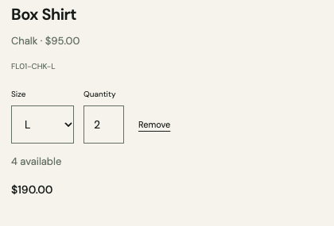
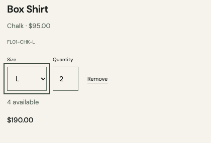

Keep the cart.
Keep your place.
A cart update replaced the focused control.
The next release restores the intended focus.
Before / focus lost

Changing size updated the SKU but sent keyboard focus to the page body.
After / focus retained

The selected size keeps its visible focus. Quantity Tab moves to the next intended control.
Observed and checked in English and Arabic. Valid cart contents and the new SKU stay intact.